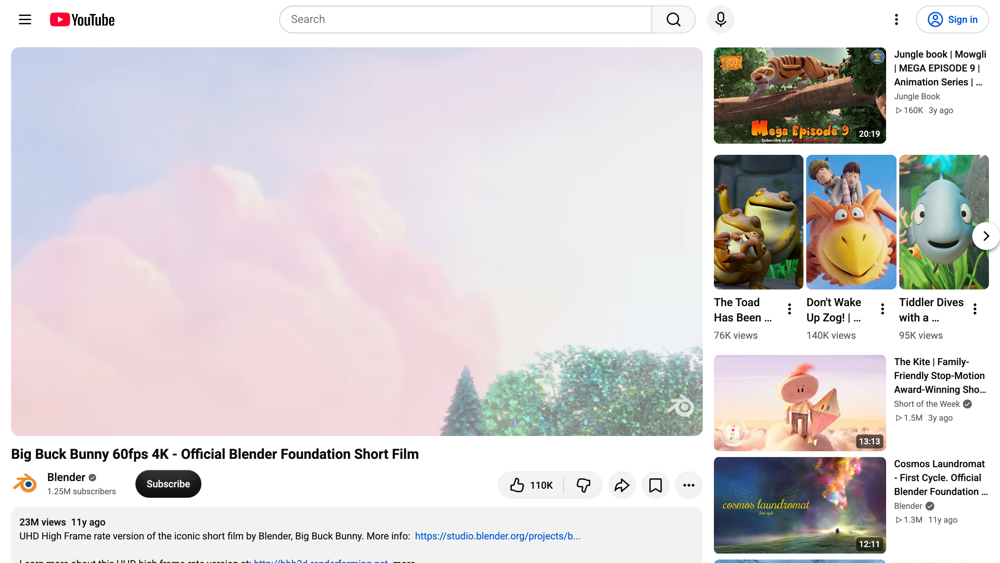

Mac 自带录屏
录不到电脑声音？
试试这个 ↓
录屏
免费 · 开源 · 只有 1MB
①
想录什么，点一下
整个屏幕 · 任意一个窗口
②
框选任意区域
拖一拖，大小随便调

③
边录边说，声音一起录
电脑声音 + 麦克风，自动合成一条
🔊 电脑声音
🎙️ 麦克风
⌥
⌘
R
快捷键一按，开始 / 停止
④
停止，马上打开看
画面和声音都录下来了
演示片段：Big Buck Bunny © Blender Foundation · CC BY 3.0
录屏
Mac 免费录屏小工具
M 系列芯片 · macOS 15 以上 · 中英双语
演示片段：Big Buck Bunny © Blender Foundation · CC BY 3.0
录屏
录什么
选区域…刷新列表
录电脑声音
录麦克风
显示鼠标
00:00
⌥⌘R 开始 / 停止
保存到：影片 / 录屏打开文件夹
录屏 2026-10-27 10.30.15.mp4
00:00 / 00:12